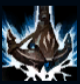
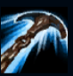
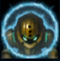
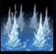
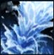

Nautilus
| Nautilus The Titan Of The Depths | |
|---|---|
| Release date | 14.02.2012 |
| Class | Vanguard |
| Positions | Support |
| Resource | Mana |
| Range type | Melee |
| Adaptive type | Magic |
| Base statistics | |||
| Health | 576 – 2038 | Mana | 400 – 1199 |
| Health regen. | 8.5 – 17.85 |
Mana regen. | 8.626 – 17.13 |
| Armor | 39 – 102.75 | Attack damage | 61 – 117.1 |
| Magic resist. | 32 – 53.25 | Crit. damage | 175% |
| Move. speed | 325 | Attack range | 175 |
O legendă singuratică, mai veche decât primele pontoane scufundate din Bilgewater, uriașul în armură numit Nautilus străbate apele întunecate de pe coasta Arhipelagului Flăcărilor Albastre. Mânat de o trădare uitată, lovește fără avertisment, rotindu-și ancora enormă ca să-i salveze pe cei sărmani și să-i înece pe cei lacomi. Se spune că îi atacă mai ales pe cei care uită să plătească ''jertfa din Bilgewater'', trăgându-i sub valuri și reamintindu-le că nimeni nu poate scăpa din adâncuri. |  |
LOVITURĂ NĂUCITOARE Primul atac al lui Nautilus împotriva unei ținte îi provoacă daune fizice crescute și o țintuiește pentru scurt timp. |
||
|---|---|---|---|---|
 |
LINIE DE DRAGARE Nautilus își aruncă ancora înainte. Dacă nimerește un inamic, el și adversarul sunt trași unul spre altul, iar ținta suferă daune magice. Dacă se lovește de teren, îl trage pe Nautilus spre ea. |
|||
 |
MÂNIA TITANULUI Nautilus primește un scut temporar. Cât timp scutul rezistă, atacurile lui le provoacă daune în timp țintei și inamicilor din jur. |
|||
|  |
VAL DE STRĂPUNGERE
Nautilus creează trei valuri care explodează în jurul lui. Fiecare explozie încetinește inamicii și le provoacă daune. |
|||
 |
GRENADĂ SUBMARINĂ Nautilus lansează o undă de șoc în pământ care urmărește un adversar. Unda de șoc brăzdează solul de deasupra sa, aruncându-i pe adversari în sus. Când ajunge la adversar, unda de șoc erupe, aruncându-și ținta în sus și amețind-o. |